Deep Q-Learning: scaling value-based RL
DQN makes Q-learning scalable by growing from a small Q-table into a neural network that scores actions, samples environment by interaction, and trains on experience.
Why introduce a deep Q-network?
Tabular Q-learning stores one value for every state-action pair. This is effective when the state set is small and discrete, but becomes impractical when observations are high-dimensional, such as pixels from an Atari game. DQN replaces the table with a parameterized function that predicts a value for each available action.
The network is trained from experience rather than being given the correct action for every state. At decision time, an epsilon-greedy policy usually chooses between the highest-valued action and exploration.
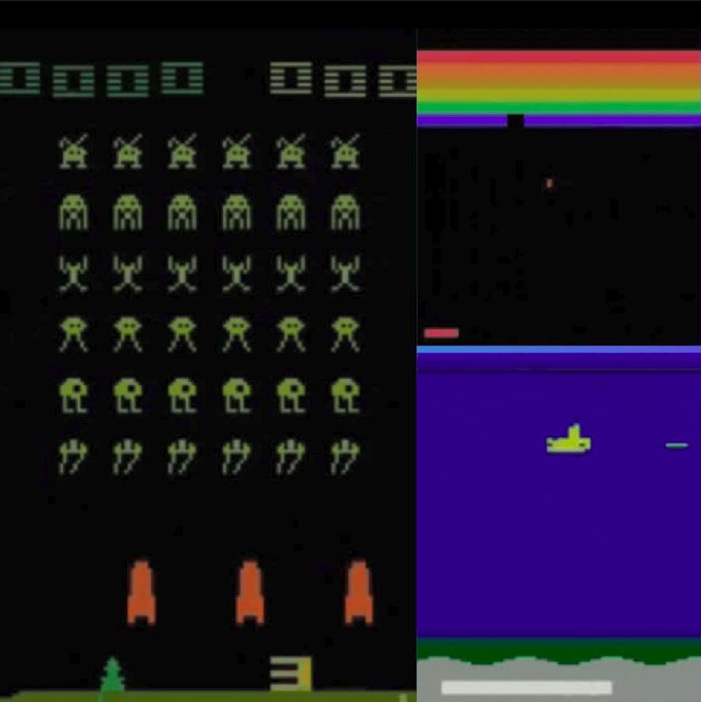
Learning outcomes
- Explain why tabular Q-learning does not scale to image-sized state spaces.
- Describe how a neural network maps an observation to action-value estimates.
- Calculate a one-step Q-learning target and squared TD loss.
- Explain the roles of replay memory, and a target network.
From Q-Learning to DQN
The value-learning objective remains familiar; the representation of the Q-function changes.
The table is the bottleneck
In tabular Q-learning, the value for each state and action is stored in a table. This is manageable in compact environments, but a pixel observation can take an enormous number of possible values. Storing a separate row for every observation is not a realistic solution.
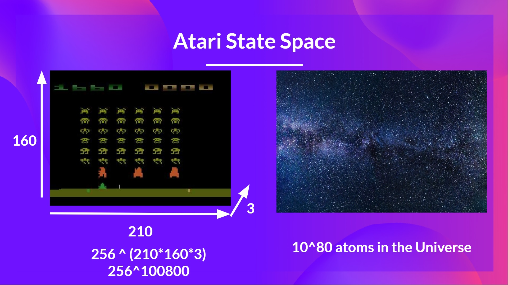
Function approximation
Use a parameterized model Qθ(s, a) to generalize estimates across observations.
Shared representation
One network processes the state and emits a value for every legal action.
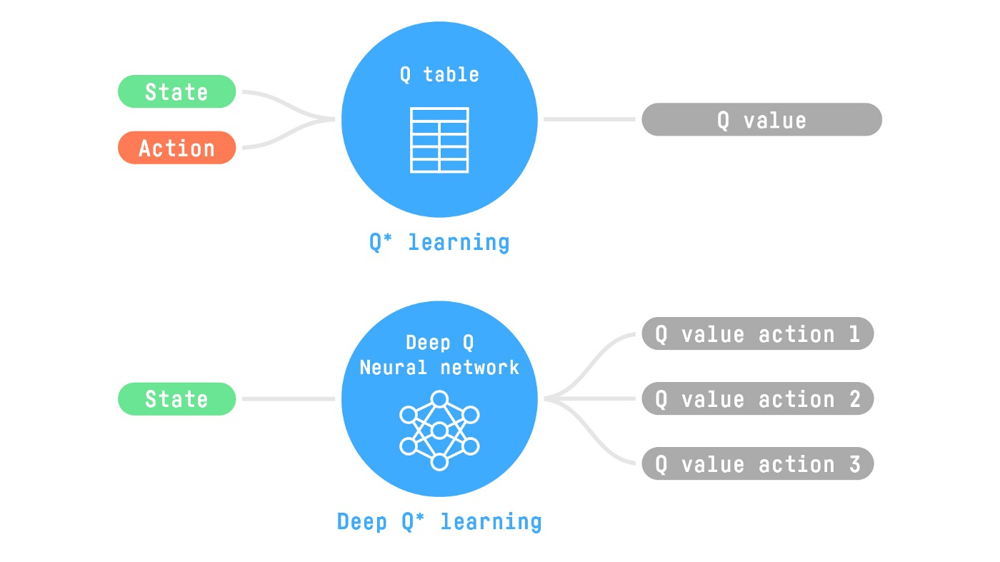
What stays the same?
The agent still estimates action values, explores while gathering data, and prefers actions with larger estimated Q-values. What changes is the update: instead of directly editing a table cell, the agent adjusts network parameters to reduce prediction error on sampled transitions.
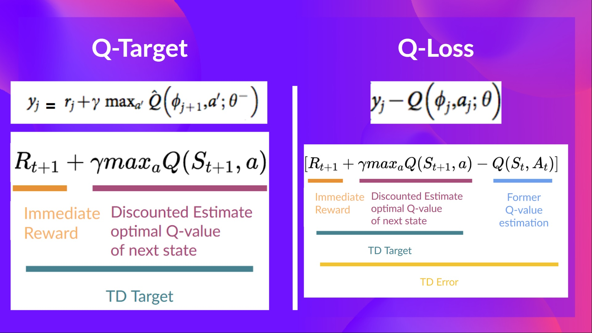
Gradient-based optimization to update the network
The Deep Q-Network
Images are prepared as compact observations, passed through a feature extractor, and converted into one Q-value per action.
Observation pipeline
- Convert each frame to grayscale and resize it to 84 × 84 pixels to reduce input size.
- Stack four consecutive frames so the input carries short-term motion information as well as appearance.
- Pass the stack through convolutional layers to extract spatial features.
- Use fully connected layers to produce Q-values for the available actions.
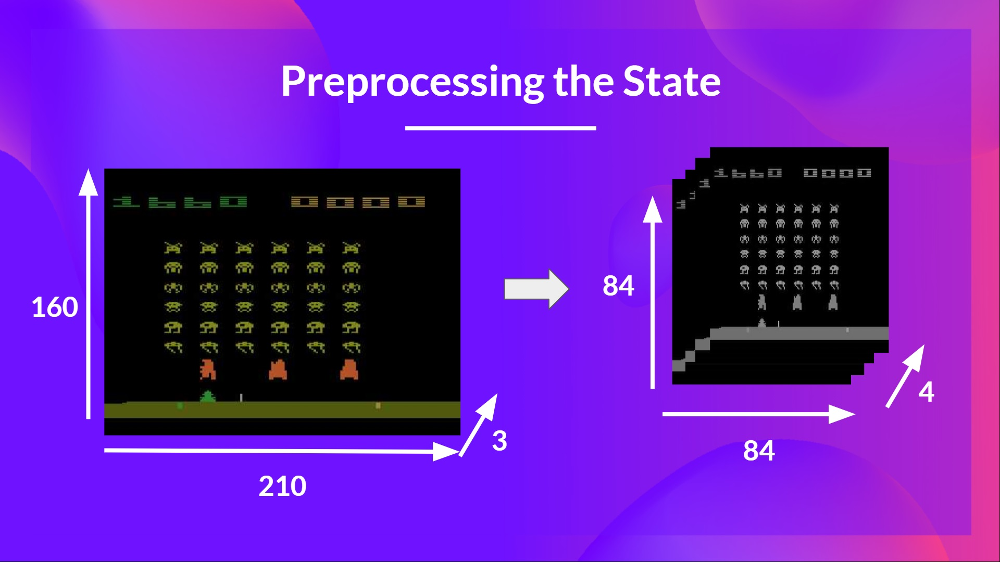
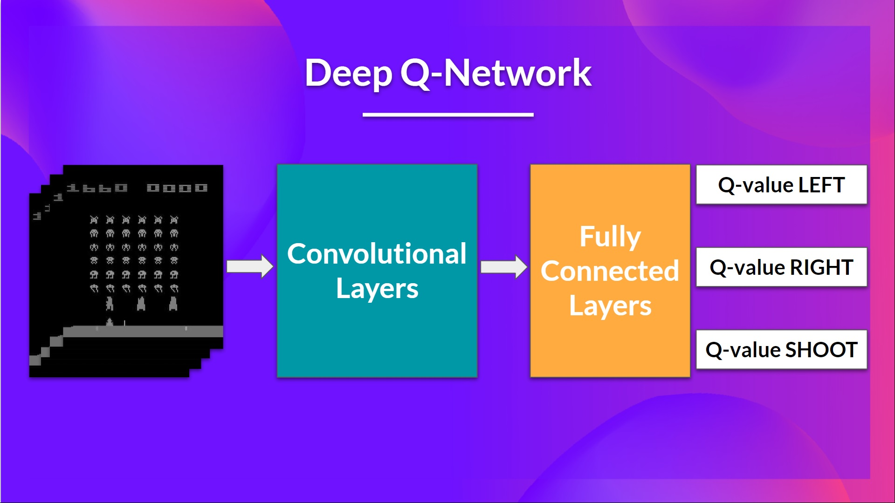
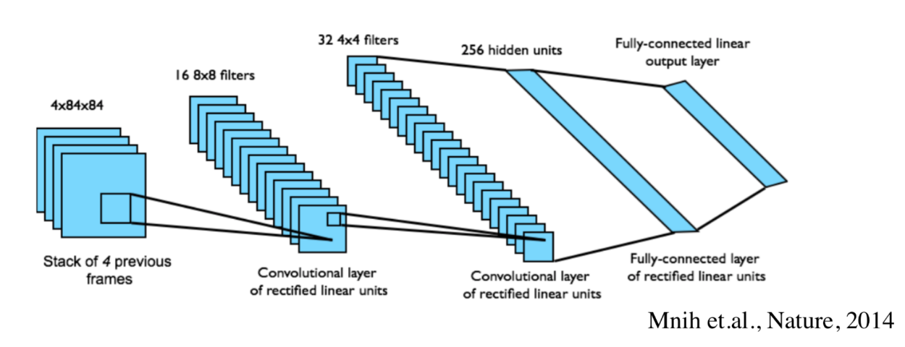
Why stack frames?
A single still image often does not reveal velocity or direction. For example, one frame may show a ball but not whether it is moving left or right. Several recent frames provide temporal context to a feed-forward network.
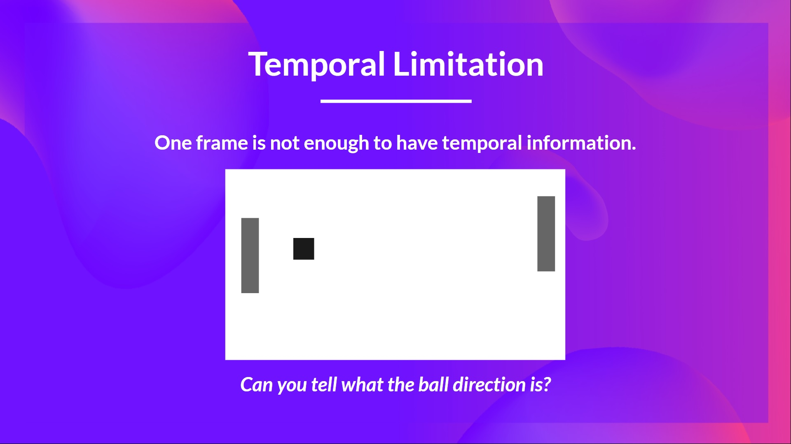
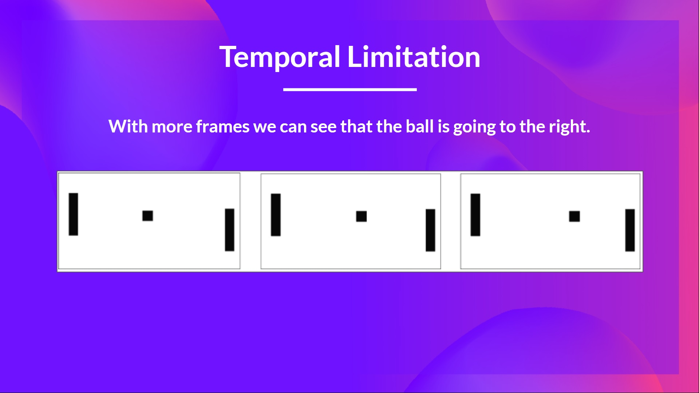
How DQN learns
Sampling and training alternate: gather transitions, then learn from a random mini-batch instead of updating on only the latest step.
Two phases of DQN
Sampling: we perform actions and store the observed experience tuples in a replay memory.
Training: Select a small batch of tuples randomly and learn from this batch using a gradient descent update step.
Gradient descent changes the online network parameters to reduce the loss. The target value is treated as a fixed label for that update, rather than differentiated through.
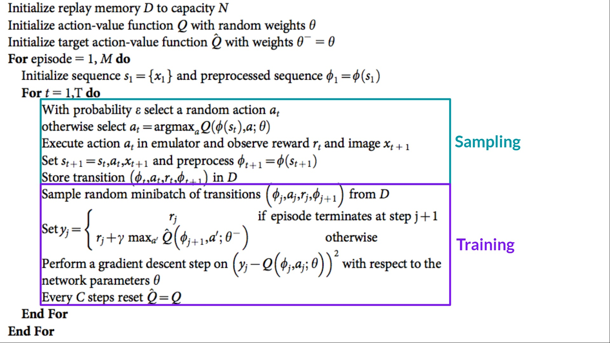
Stabilizing ideas
Deep Q-Learning training might suffer from instability, mainly because of combining a non-linear Q-value function (Neural Network) and bootstrapping (when we update targets with existing estimates and not an actual complete return).
The danger of non-linear function approximation (neural networks)
In traditional tabular Q-learning, every state-action pair has its own independent entry in a lookup table. Updating the value of state A has no effect on state B.
A neural network instead generalizes by compressing and mapping states with shared weights:
- Updating the network weights to improve the prediction for state A also changes predictions for thousands of other states B, C, and D that share similar features.
- This can accidentally destroy previously learned knowledge (catastrophic forgetting) and cause the network's outputs to oscillate wildly.
The Danger of Bootstrapping (The "Moving Target" Problem)
Bootstrapping means updating your current estimate using a future estimate rather than waiting for the actual final outcome:
- You train the network to match a target computed by the very same network, or a very close version of it.
- If the same network produces both the estimate and the target, changing its weights changes the answer it is trying to match.
- Because the network weights change slightly with every gradient step, the target moves every time you update, contributing to oscillation or instability.
When they combine: the vicious feedback loop
When non-linear function approximation and bootstrapping are combined, minor approximation errors in the neural network can be fed back into the target calculations:
- The network makes a slight overestimation or error for a future state s′.
- Because of bootstrapping, that error is treated as part of the "truth" (
r + γ max Q) for the current state s. - The neural network adjusts its weights to chase this flawed target.
- Because it is a non-linear network, this weight adjustment ripples across the entire state space, compounding the error further.
- This feedback loop can snowball rapidly, causing Q-values to diverge to infinity or collapse entirely.
The Solution:
Experience replay
Store transitions and sample random mini-batches. Reuse past data and reduce the strong sequential correlation between updates.
Fixed target network
Compute targets with a separate network whose weights are held fixed for a period, then periodically copy online weights into it.
Experience replay buffer
In online learning, an agent can update from its latest transition and then move on. A replay buffer with capacity N stores transitions (state, action, reward, next state), so training can reuse experiences instead of learning only once from each latest step.
Training samples a mini-batch at random from the buffer. Mixing older and newer transitions reduces the correlation that would arise from learning only from consecutive frames, and gives earlier situations another chance to influence the network. This can lessen interference with previously learned behavior.
Fixed target network
DQN learns by comparing the online network's estimate Q(state, action) with a bootstrapped target: the observed reward plus the discounted best estimated value of the next state.
A target network provides a steadier reference: it calculates the next-state value while its weights are held fixed for a period. Every C training steps, copy the online network's weights into the target network. This slows target changes; it helps stabilize training.
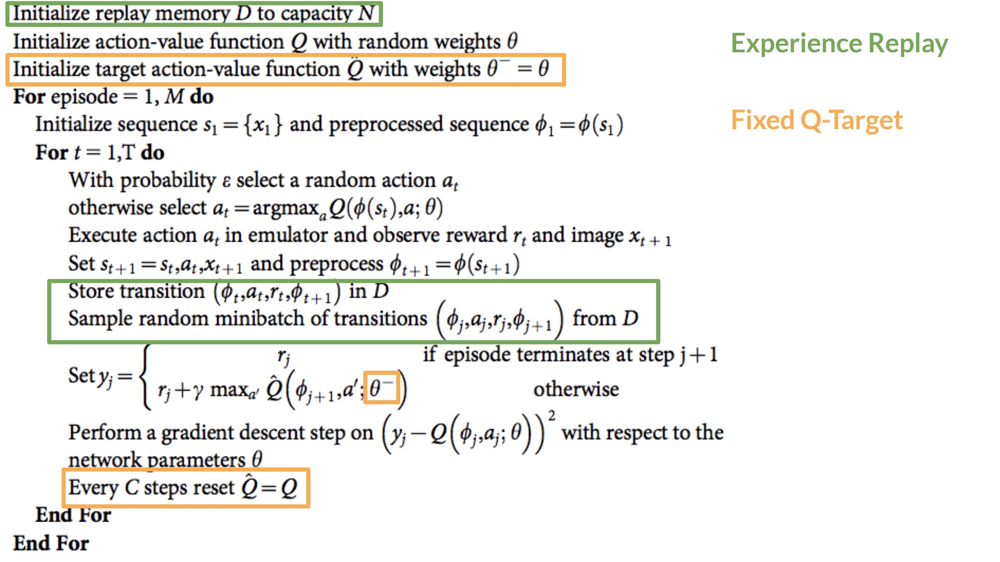
Training loop at a glance
- Initialize an online Q-network, a target network, and a replay buffer.
- Choose an action with an exploration policy and observe reward, next state, and termination.
- Store the transition in the replay buffer.
- Sample a mini-batch and form TD targets using the target network.
- Minimize the batch loss; periodically copy online parameters to the target network.
Hyperparameters and network weights
Hyperparameters are settings we choose to guide learning. Network weights are the values the DQN learns from experience.
Settings that shape learning
These settings affect how quickly the agent learns, how much it explores, and how steady its updates are. The best values depend on the game and training setup.
1. Learning rate (α or lr)
Where it is used: The optimizer uses it when adjusting the network after calculating the loss.
What it does: It controls how big each learning step is. If it is too high, the action scores can change too much and learning may become unstable. If it is too low, learning can take a long time.
2. Discount factor (γ or gamma)
Where it is used: In the Q-learning target, which combines the reward now with an estimate of future reward.
What it does: It controls how much the agent cares about future rewards. A value near 1 gives future rewards more weight; a smaller value focuses more on rewards right now. Atari tasks often use a high value, such as 0.99, to encourage longer-term play.
3. Exploration rate (ε or epsilon)
Where it is used: When the agent chooses an action. With probability ε it picks a random action; otherwise it picks the action with the highest estimated score.
What it does: It balances trying new actions with using what the agent has learned. Training often starts with more random actions, then gradually lowers ε. It usually remains a little above zero so the agent still explores.
4. Replay buffer size and batch size
Where they are used: When saving past experiences and choosing examples for a learning update.
What they do: The replay buffer holds past experiences. A larger buffer can keep a wider range of moments. The batch size is how many saved experiences are used in one update. Random batches help reduce the link between nearby game frames.
5. Target network update timestep
Where it is used: When copying or slowly updating the main network's weights into the target network.
What it does: DQN uses a target network to calculate learning targets. Keeping it unchanged for a while, then updating it every set number of steps, makes the targets change less often. Some versions instead make small, frequent updates using a setting called τ (tau).
What are network weights?
Weights (written θ) are the numbers inside the network that it learns to change. Hyperparameters tell the network how to learn; the weights are what it learns. Together, weights and biases help the network turn an image into a score for each available action.
CNN filters and decision layers
The early convolutional layers use small filters, also called kernels, to find patterns in the images, such as edges or objects. These filters are part of the network weights, and learning adjusts them. Later, fully connected layers use the patterns found earlier to produce action scores.
Because the input includes several recent frames, the network can learn clues about motion as well as appearance. Its weights help it recognize useful patterns without storing a separate answer for every possible screen.
How the weights learn
- The main (online) network uses its weights θ to predict the score for an action that was taken.
- The target network, with weights θ−, helps calculate the reward-plus-future-reward target.
- The loss measures the gap between the predicted score and the target.
- The optimizer uses the learning rate to adjust the online weights and reduce that gap.
DQN Colab Lab
Open the interactive notebook to explore a DQN lab in Google Colab.
Open the notebook
Sample quizes
Change a sampled transition and inspect how the target and prediction error change.
TD target and loss calculator
Set the transition values. Turn on “terminal transition” to remove bootstrapping from the target.
Check your understanding
Answer the questions below, then check your score. The questions cover the key ideas from the Deep Q-Learning unit.
Human level control for Atari Breakout game
You are designing a learning controller for Atari Breakout game. Your goal is to destroy the brick wall. You can try to break through the wall and let the ball wreak havoc on the other side, all on its own! You have five lives. This is called as the Atari Breakout game.
In Atari Breakout, there are multiple levels with different brick layouts. The player controls a paddle at the bottom of the screen to bounce a ball and break bricks.
Breakout does not serve the ball until you press FIRE. Holding NOOP leaves the game idle, giving no reward and never ending. The ball must be served again with FIRE after each life lost, and the game ends when all lives are lost.

The action space is discrete with 6 actions available:
- 0: NOOP
- 1: FIRE
- 2: RIGHT
- 3: LEFT
- (bottom rows): 1 point each
- As the row increases, point value increases by 2
Install and configure Gymnasium with Atari/ALE support, initialize ALE/Breakout-v5, and verify observations, actions, episode termination, and the FIRE start requirement. Implement DQN with an online Q-network, target network, replay buffer, mini-batch updates, and ε-greedy exploration.
- Use the same image preprocessing and frame-stack configuration in training and evaluation.
- Handle Gymnasium reset and step outputs, including terminated/truncated episode flags.
- Log episode rewards, training steps, and important hyperparameter values
- Save the best model checkpoint and a short gameplay recording for the final configuration.
References and image credits
Lesson explanations in this lab are paraphrased study notes. Course figures are included locally for use with this offline lesson.
Deep RL Course lessons
- Deep Q-Learning — Introduction
- From Q-Learning to Deep Q-Learning
- The Deep Q-Network
- The Deep Q-Learning Algorithm
- Deep Q-Learning Quiz
Code implementation
All illustrations in the images folder are from the Hugging Face Deep RL Course course-images dataset and are used here with source attribution. Image rights remain with their respective authors.